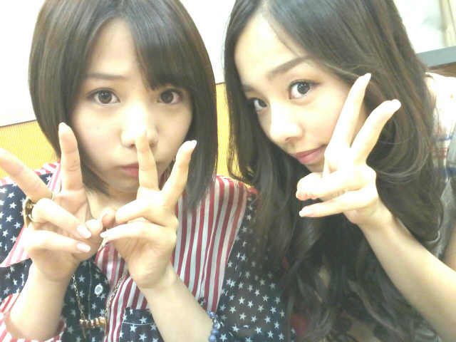

ほーいとぉ〜〜*・ゞ・*

昨日は帰りが遅く
玄関開けておベッドさん♪に
直行しました
ろってぃ−♪でぇす*・ゞ・
にっ/
6/30(土),
ユアテックスタジアム仙台☆にて
Jリーグ 決勝戦 !
仙台 vs 広島 がありましたっ★!
私達 乃木坂46 も
サポ－ターとして
応援しに行きました^ω^
試合前,
『左胸の勇気』という曲の
パフォーマンスをし
その後
私達も皆で試合を見てました☆
皆 声枯れるんちゃうか。
って位 応援してました>ω<
自分はもう
素晴らし過ぎるプレイに
見入ってしまってました^^
そして 皆様 ,
温かい声援
ありがとうございました+・ω・+
めちゃくちゃ嬉しかったです♪
そして,被災地にも行ってきました。
最初 現状を目にした時は
衝撃的で言葉がでなかったです。
あったはずの住宅地が
流されて,広い空地になって
でも ポツンと何軒か
まだ家が残っていて...
だけどその家ももう住める状況じゃなくて
ボロボロになった学校の
教室の中は
黒板とロッカーだけしか
残ってなくて、
がれきの上には
大きな釘が刺さってあって
ほんとはこの上に
何かあったんだろうけど
流されたんだろうな´｀
だとか ...
最後に、皆で手を合わせてきました。
皆がまた笑顔になります様に...。
上に貼った 写メは
仙台に行く直前に撮った
あみ♪とのツーショットです。
まひろの携帯
あみ♪の動画でいっぱいや...(⌒‐⌒)
そして昨日は,...
ひひひひひ。笑
サードに向けての。
...
ナイショ。☆^ω^
仕事中の待ち時間に
メンバー皆で
カラオケに行きました♪
ひたすら歌い続けました+・ω・+
あみ まひろ まりか の
3人で部屋に入ってたんですけど、
途中から
みさみさ さゆりん かなりん
ゆったん...
いっぱいメンバーが
入ってきて、
みんな 歌い踊りまくってました★☆★
ほんと 楽しかったです^ω^
ではっ ノシ♪